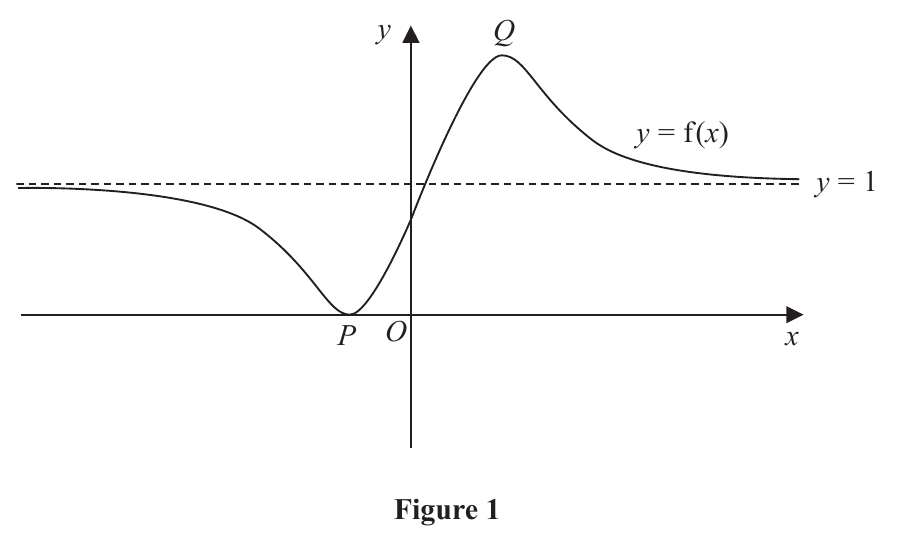
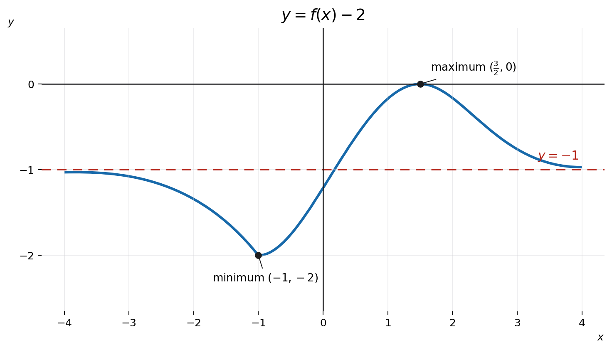
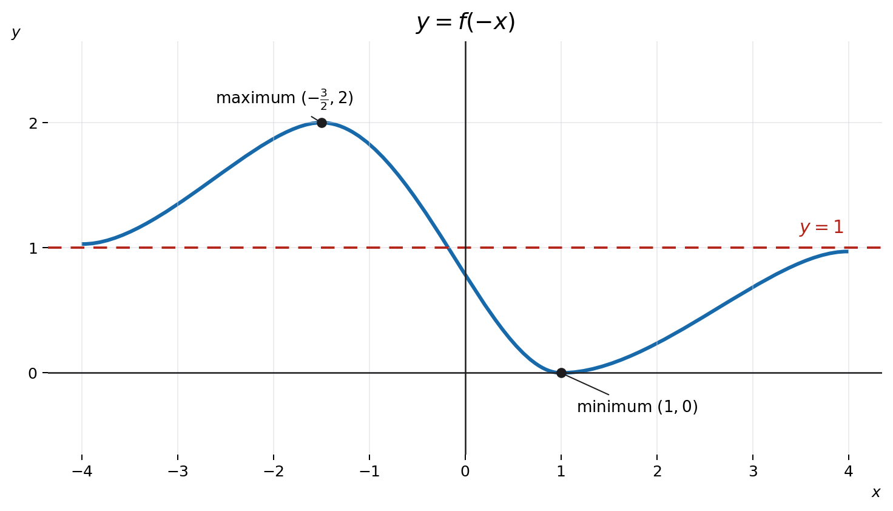

Figure 1 shows a sketch of a curve with equation \(y=f(x)\)
The curve has a minimum at \(P(-1,0)\) and a maximum at \(Q\left(\frac32,2\right)\)
The line with equation \(y=1\) is the only asymptote to the curve.
On separate diagrams sketch the curves with equation
(i) \(y=f(x)-2\)
(3)
(ii) \(y=f(-x)\)
(3)
On each sketch you must clearly state
- the coordinates of the maximum and minimum points
- the equation of the asymptote
[6 marks]

Strategy and why this applies. A vertical shift moves every \(y\)-value; the asymptote shifts with the curve. Formula or definition first.
Step 1 — what "−2" does. Replacing \(y\) by \(y-2\) translates the graph down by 2 units: every point \((x,y)\) becomes \((x,y-2)\). The \(x\)-coordinates are unchanged.
Step 2 — move the key points. Minimum \(P(-1,0)\to(-1,-2)\); maximum \(Q(\tfrac32,2)\to(\tfrac32,0)\).
Step 3 — move the asymptote. The horizontal asymptote \(y=1\) shifts to \(y=1-2=-1\).
So the transformed graph has min \((-1,-2)\), max \((\tfrac32,0)\), asymptote \(y=-1\).
Step 4 — shape preserved. A vertical translation does not stretch, reflect or change the curvature; the curve looks identical, just 2 units lower. Marks are awarded for the correct labelled sketch, not only the coordinates.
Step 5 — transfer trigger and exam technique. For a translation \(y=f(x)+k\), every output is shifted by \(k\); here \(k=-2\), so subtract 2 from each \(y\)-coordinate and from any horizontal asymptote. Write the new coordinates next to the originals so you can see the pattern: \(P(-1,0)\to(-1,-2)\), \(Q(\tfrac32,2)\to(\tfrac32,0)\). A horizontal asymptote is a \(y\)-level, so it moves with the curve (from \(y=1\) to \(y=-1\)), whereas the \(x\)-coordinates are untouched. The most common slip is to move the asymptote sideways or forget it; always redraw it at its new height and label it.
Answer diagram (i). The whole curve and its horizontal asymptote move down by 2.

Strategy and why this applies. A reflection in the y-axis sends \(x\mapsto -x\); \(y\) is unchanged, so a horizontal asymptote stays put. Formula or definition first.
Step 1 — what \(f(-x)\) does. Replacing \(x\) by \(-x\) reflects the graph in the \(y\)-axis: each point \((x,y)\) maps to \((-x,y)\). The \(y\)-values are unchanged.
Step 2 — reflect the key points. Minimum \(P(-1,0)\to(1,0)\); maximum \(Q(\tfrac32,2)\to(-\tfrac32,2)\).
Step 3 — the asymptote is horizontal. \(y=1\) does not involve \(x\), so reflecting in the \(y\)-axis leaves it exactly at \(y=1\).
Step 4 — common trap. A reflection in the \(y\)-axis is a horizontal change only; it cannot move a horizontal line. Do not send the asymptote to \(y=-1\) — that would be the vertical shift of part (i).
Step 5 — transfer trigger and exam technique. When sketching transformations, label the moved key points (here the min and max) and the asymptote explicitly on the axes; the mark scheme rewards a correct labelled sketch, not just the coordinates in words. A reliable method is: write the transformation rule for a general point \((x,y)\), apply it to each known feature, then redraw the same shape in the new position. For a vertical shift the shape is identical and only the vertical position changes; for a \(y\)-axis reflection the shape is mirror-imaged left-right and any \(x\)-coordinate changes sign. Mixing the two up — shifting when you should reflect, or moving the asymptote when you should not — is the most common transformation error.
Sense check. A vertical shift preserves x-coordinates, while a y-axis reflection preserves y-coordinates. On another paper, map one general point before sketching the whole transformed curve.
Answer diagram (ii). Reflection in the y-axis changes each x-coordinate sign but leaves every y-value, including the asymptote, unchanged.
